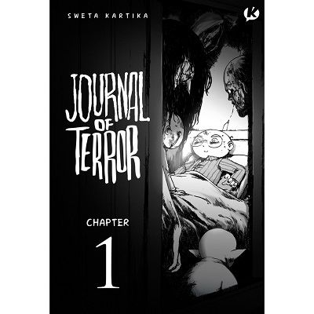

10 Buku Terpopuler di Tahun 2020
Hiruk pikuk pandemi korona, dan juga kesibukan di masa karantina membuat tahun ini terasa berjalan begitu cepat.
Untuk menemanimu yang masih dalam masa karantina dan work from home, atau bagi yang sudah kembali bekerja di kantor dalam rangka menyambut new normal, literasi.id punya daftar buku terpopuler 2020 yang bisa kamu jadikan referensi bacaan.
Apa saja?
1. Demon Slayer: Kimetsu no Yaiba 01 - Koyoharu Gotouge
Menceritakan kisah Tanjiro Kamado, seorang bocah laki-laki sederhana yang hidupnya berubah total, setelah keluarganya terbunuh secara sadis oleh iblis pemangsa manusia yang merasuki tubuh adiknya, Nezuko.
Di tengah keputusasaannya, muncul seseorang tak dikenal yang mengaku sebagai “Pembasmi Iblis” atau Demon Slayer, bermaksud membantunya membasmi iblis itu, arah takdirnya pun mulai berubah.
Mampukah ia menjadi seorang pembasmi iblis yang membalaskan dendam keluarganya? Berhasilkah ia mencari cara untuk mengembalikan Nezuko menjadi manusia kembali?
2. Hai, Miiko! 31 Reguler - Ono Eriko
Miiko, merupakan seorang siswi kelas 6 SD yang selalu penuh semangat. Kehidupan Miiko bersama teman-teman dan keluarga tersayang selalu ramai dan penuh warna.
Keseharian yang seru itu masih sama, tapi ada sedikit perubahan pada perasaan Miiko. Kini, ia menjalani hari-harinya dengan berbeda karena nuansa cinta.
Wah, emang Miiko naksir sama siapa sih? Tappei atau Yoshida? Ikuti keseruannya dalam edisi ini, dijamin ngakak dan bikin gemes!
3. Koloni Journal of Terror - Sweta Kartika
Awalnya, Prana adalah anak biasa yang tumbuh normal layaknya anak-anak lain. Namun, saat usianya beranjak 5 tahun, Prana tiba-tiba jatuh sakit dan mengalami demam tinggi selama berhari-hari.
Pada hari ke-8 penyakitnya, dia menyadari ada yang salah dengan dirinya, terutama indera penglihatannya. PRANA DAPAT MELIHAT HANTU.
Inilah catatan harian Prana. Semua yang terjadi dalam catatan ini adalah nyata. Mereka ada meski tak kasat mata.
4. Mantra Orang Jawa - Sapardi Djoko Damono
Eyang Sapardi kembali merilis karya terbarunya di tahun ini yang berjudul Mantra Orang Jawa. Dalam buku ini, Sapardi Djoko Damono menuliskan kembali mantra-mantra di zaman lampau.
Konon, mantra-mantra ini memiliki kekuatan yang bisa dimanfaatkan untuk berbagai keperluan hidup sesuai dengan maksudnya. Namun, Eyang menjelmakannya ke dalam bentuk puisi-puisi yang indah.
Siapa tahu masih ada kekuatan tersembunyi yang tersisa dalam puisi-puisi itu, kan? Penasaran?
5. Kanker: Biografi Suatu Penyakit - Siddhartha Mukherjee

Buku ini bukan hanya sejarah medis, melainkan sesuatu yang lebih pribadi, lebih mendalam, yaitu biografi. Iya, biografi suatu penyakit yaitu kanker.
Kanker merupakan penyakit yang amat besar pengaruhnya, dapat mengubah hidup pasien maupun orang-orang di sekelilingnya.
Lalu, apa sebenarnya kanker itu? Sejak kapan kanker mulai menyerang manusia? Apa penyebab kanker? Bisakah dan bagaimanakah kanker disembuhkan dan dicegah?
Ditulis oleh seorang dokter kanker, temukan jawaban semua pertanyaan tentang kanker dalam buku ini!
6. A Cup of Tea - Gita Savitri Devi

Setelah sukses dengan Rentang Kisah, salah satu influencer ternama di Indonesia yaitu Gita Savitri Devi, kembali merilis buku terbarunya yaitu A Cup of Tea.
Dengan bahasa yang ringan, ia menceritakan pengalamannya mengenai kebahagiaan, menerima segala suka dan duka kehidupan, serta pengalaman cyber-bullying yang pernah ia alami.
Bagaimana cara ia menghadapinya? Simak pengalaman hidup @gitasav selengkapnya dalam buku ini!
7. Segala-galanya Ambyar - Mark Manson
Mark Manson kembali dengan karya yang membuat pembacanya memikirkan hal sederhana, namun sebenarnya berdampak pada kehidupan.
Apakah kamu merasa kecewa dengan hidupmu? Apakah kamu merasa cemas secara terus-menerus? Apakah kamu merasa bahwa dunia di sekelilingmu buruk dan jahat?
Ya, dunia ini memang kacau dan ambyar, tapi itu karena harapan yang dipunya terlalu disilaukan oleh keinginan-keinginan sendiri yang tidak masuk akal.
Bagaimana caranya agar tetap waras di tengah dunia yang ambyar? Coba baca buku ini!
8. Happy Parenting: Without Spanking or Yelling - Novita Tandry
Sebenarnya, cukup mudah untuk menjadi orangtua. Namun, terkadang menjadi sulit ketika anak berubah menjadi tidak patuh.
Buku ini dapat membantu orangtua dalam menyelesaikan masalahnya. Tentang pendekatan apa yang sebenarnya paling efektif ketika berhadapan dengan perilaku anak yang bermasalah, dan ketika suasana hatinya se dang marah.
Selain itu, ada juga panduan praktis yang membantu orangtua menemukan jawaban tentang cara-cara yang paling efektif untuk mendorong anak berperilaku lebih baik lagi.
9. The Things You Can See Only When You Slow Down - Haemin Sunim
Haemin Sunim mengajak pembacanya untuk memperlambat ritme hidupnya sejenak. Loh, mengapa harus mencoba melambat?
Ternyata, selama ini yang selalu sibuk adalah pikiran kita. Bukan semesta. Tetapi, selama ini kita sering percaya bahwa kesibukan dalam pikiran kita merupakan cerminan dari semesta.
Melalui buku ini, kita diajak untuk menjadi pribadi yang tenang di tengah dunia yang sibuk, serta tidak menjadi egois dan harus pemaaf.
Sudah siap menjadi pribadi yang tenang dalam menghadapi hidup?
10. Ada Nama yang Abadi di Hati Tapi Tak Bisa Dinikahi - Maman Suherman
Buku terbaru dari Kang Maman ini cocok untuk kamu yang sedang kode-kodean ke gebetan, agar ia bisa segera dalam dekapan.
Selalu ingat pesan penting berikut:
Kalau cari pasangan hidupmu, pilihlah yang tidak menistakanmu. Cinta itu memuliakan.
Cinta itu tidak menghinakan. Cinta itu meninggikan. Cinta itu tidak merendahkan.
Temukan lagi berbagai wejangan menarik lain dalam buku ini!